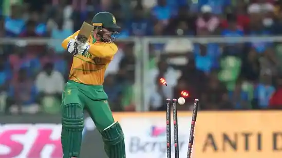

Published on Sep 28, 2022 10:41 PM IST
Arshdeep Singh and Deepak Chahar sent the South African top five tumbling after which they managed to get to a score of 106/8. Suryakumar Yadav and KL Rahul then scored contrasting half centuries to win the match for India on what was a difficult pitch to bat on.
go to next page